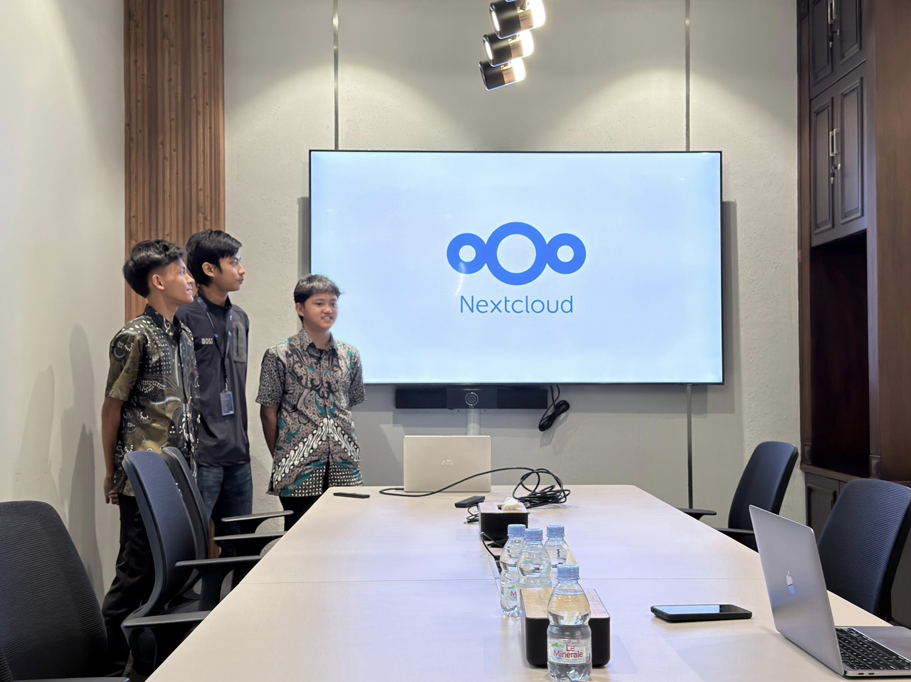

High Availability Nextcloud Infrastructure
Designed and implemented a High Availability Nextcloud infrastructure with load balancing and automatic failover to ensure service availability.
Architecture
Built a four-node High Availability Nextcloud infrastructure consisting of two Nextcloud application nodes and two HAProxy nodes with Keepalived for load balancing and automatic failover. The architecture also included a MariaDB Galera Cluster for database replication, GlusterFS for shared distributed storage, and Redis for caching and file locking.
Implementation
Configured the Nextcloud application nodes to access shared data through GlusterFS, while MariaDB Galera Cluster provided database replication across nodes. HAProxy distributed traffic between the Nextcloud nodes, with Keepalived managing the Virtual IP for failover between the HAProxy nodes. Health checks were configured to ensure traffic was directed only to available backend servers.
Challenges
The main challenges involved maintaining consistency across multiple application nodes and troubleshooting the interaction between the database cluster, distributed storage, Redis, and load-balancing components. Issues encountered included database connectivity, GlusterFS node connectivity, Redis configuration, and backend health status.
Solutions
Configured Redis for centralized file locking and caching, MariaDB Galera Cluster for database replication, and GlusterFS for shared data access between Nextcloud nodes. HAProxy health checks and Keepalived failover mechanisms were configured to support service continuity when a node or load balancer became unavailable.
Results
Successfully implemented a High Availability Nextcloud infrastructure where service access could be maintained during node maintenance or component failure through load balancing and automatic failover. The project provided hands-on experience in Linux system administration, virtualization, high availability, clustering, distributed storage, and infrastructure troubleshooting.
